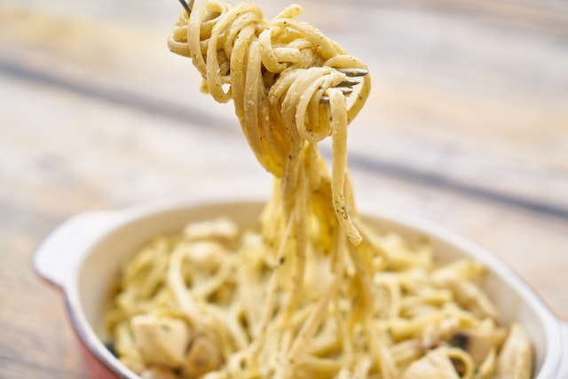

Pasta alla carbonara

Description
Pasta alla carbonara is a very easy and tasty dish of the Italian tradition.
It's perfect as the main course of a lunch, especially when there is not a lot of time for cooking.
Ingredients
- 320g of spaghetti
- 6 yolks
- 150g of guanciale
- 50g of pecorino
- black pepper
- salt
Steps
- Put some water in a pot, and begin to warm it over a stove.
- Cut the guanciale into small stripes. Brown the stripes into a pan.
- Put the yolks, the grated pecorino and some black pepper into a bowl. Mix everything with a spoon till it becomes a smooth cream.
- When the water into the pot starts boiling, put some salt and the spaghetti in it.
- Once the spaghetti are cooked, drain them and put them into the guanciale pan.
- Pour the yolk cream over the spaghetti and mix them together.
- The spaghetti alla carbonara are ready!